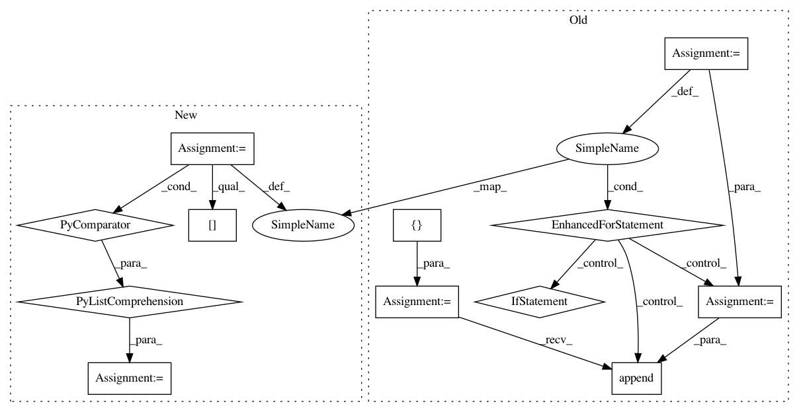

61980b57db5349ec0adc4a7b4797ee4742c21b73,deeppavlov/models/classifiers/intents/intent_model.py,KerasIntentModel,texts2vec,#KerasIntentModel#Any#,148
Before Change
Returns:
array of embedded texts
embeddings_batch = []
for sen in sentences:
tokens = [el for el in sen.split() if el]
if len(tokens) > self.opt["text_size"]:
tokens = tokens[:self.opt["text_size"]]
embeddings = self.fasttext_model.infer(" ".join(tokens))
if len(tokens) < self.opt["text_size"]:
pads = [np.zeros(self.opt["embedding_size"])
for _ in range(self.opt["text_size"] - len(tokens))]
embeddings = pads + embeddings
embeddings = np.asarray(embeddings)
embeddings_batch.append(embeddings)
embeddings_batch = np.asarray(embeddings_batch)
return embeddings_batch
@check_attr_true("train_now")
After Change
pad = np.zeros(self.opt["embedding_size"])
embeddings_batch = self.fasttext_model([" ".join(sen.split()[:self.opt["text_size"]]) for sen in sentences])
embeddings_batch = [[pad] * (self.opt["text_size"] - len(tokens)) + tokens for tokens in embeddings_batch]
embeddings_batch = np.asarray(embeddings_batch)
return embeddings_batch
In pattern: SUPERPATTERN
Frequency: 3
Non-data size: 12
Instances
Project Name: deepmipt/DeepPavlov
Commit Name: 61980b57db5349ec0adc4a7b4797ee4742c21b73
Time: 2018-02-15
Author: yoptar@gmail.com
File Name: deeppavlov/models/classifiers/intents/intent_model.py
Class Name: KerasIntentModel
Method Name: texts2vec
Project Name: neubig/nn4nlp-code
Commit Name: f33f453e5c7f39f7f0eeb863ba7d786f58ae41b3
Time: 2017-11-26
Author: neubig@gmail.com
File Name: 07-sentrep/text-retrieval.py
Class Name:
Method Name: index_corpus
Project Name: WZBSocialScienceCenter/tmtoolkit
Commit Name: eb13c2ea02e0e06c06b288e3590ce04cc014ba04
Time: 2019-03-22
Author: markus.konrad@wzb.eu
File Name: tmtoolkit/topicmod/tm_gensim.py
Class Name: MultiprocEvaluationWorkerGensim
Method Name: fit_model